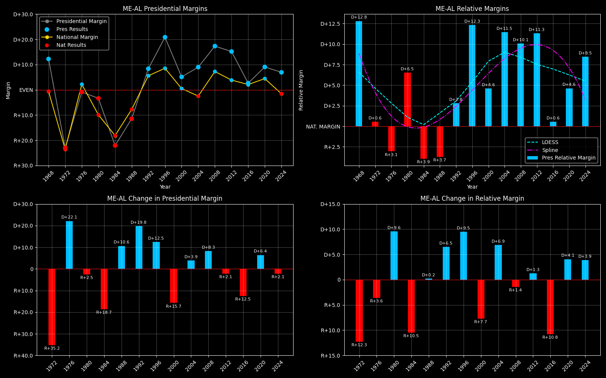

← Back to Map

Maine (ME-AL) statewide
Maine (ME-AL) — Data
| Year | D | R | Margin | Rel. Margin | Nat. Margin | Margin Δ | Rel. Margin Δ | Nat. Margin Δ |
|---|
| 1976 | 232,279(49.6%) | 236,320(50.4%) | R+0.9 | R+3.1 | D+2.3 | | | |
| 1980 | 220,974(48.1%) | 238,522(51.9%) | R+3.8 | D+6.5 | R+10.3 | R+3.0 | D+9.6 | R+12.6 |
| 1984 | 214,515(38.9%) | 336,500(61.1%) | R+22.1 | R+3.9 | R+18.2 | R+18.3 | R+10.4 | R+7.9 |
| 1988 | 243,569(44.2%) | 307,131(55.8%) | R+11.5 | R+3.9 | R+7.7 | D+10.6 | D+0.0 | D+10.6 |
| 1992 | 263,420(56.1%) | 206,504(43.9%) | D+12.1 | D+4.9 | D+7.2 | D+23.7 | D+8.7 | D+14.9 |
| 1996 | 312,788(62.7%) | 186,378(37.3%) | D+25.3 | D+15.7 | D+9.6 | D+13.2 | D+10.8 | D+2.4 |
| 2000 | 319,951(52.7%) | 286,616(47.3%) | D+5.5 | D+5.0 | D+0.5 | R+19.8 | R+10.7 | R+9.1 |
| 2004 | 396,842(54.6%) | 330,201(45.4%) | D+9.2 | D+11.6 | R+2.5 | D+3.7 | D+6.6 | R+3.0 |
| 2008 | 421,923(58.8%) | 295,273(41.2%) | D+17.7 | D+10.1 | D+7.5 | D+8.5 | R+1.5 | D+10.0 |
| 2012 | 399,235(57.8%) | 291,418(42.2%) | D+15.6 | D+11.6 | D+4.0 | R+2.0 | D+1.5 | R+3.5 |
| 2016 | 354,718(51.4%) | 334,945(48.6%) | D+2.9 | D+0.5 | D+2.3 | R+12.7 | R+11.0 | R+1.7 |
| 2020 | 435,072(54.7%) | 360,737(45.3%) | D+9.3 | D+4.8 | D+4.5 | D+6.5 | D+4.3 | D+2.2 |
| 2024 | 435,652(53.5%) | 377,977(46.5%) | D+7.1 | D+8.6 | R+1.5 | R+2.3 | D+3.8 | R+6.0 |
Column explanations
- Year
- Election year.
- D
- Number of votes for the Democratic candidate (raw count).
- R
- Number of votes for the Republican candidate (raw count).
- Margin
- Margin between the two major-party candidates ((D - R)/(D + R)).
- Rel. Margin
- The presidential margin relative to the national presidential margin (Margin - Nat'l Margin).
- Nat. Margin
- The national presidential margin for that year ((D_total - R_total)/(D_total + R_total)).
- Δ
- Change (delta) in the value from the previous election year. Blank if no data for previous year.